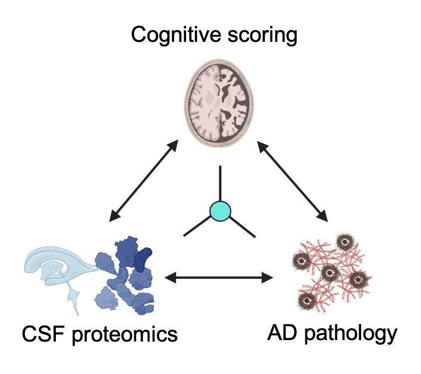
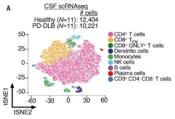

We found that a subset of plasma proteins likely originate predominantly from one organ. We leveraged that organ-protein mapping with machine-learning models to build organ age estimators, or “aging clocks”, for 11 major organs and found that organs age at different rates within and across people, and that an accelerated organ predicts disease in that same organ. In roughly 50,000 UK Biobank participants, we found that accumulating aged organs raised mortality risk step by step, while youthful brain and immune profiles uniquely tracked with longevity.
Hello! I am a postdoctoral fellow at the Icahn School of Medicine at Mount Sinai, co-advised by Scott Russo at the Brain-Body Research Institute and Alison Goate at the Ronald M. Loeb Center for Alzheimer's Disease. I completed my PhD at Stanford University with Tony Wyss-Coray and my B.S. at the University of California, Los Angeles researching under Hannah Mikkola. My research focuses on 1) identifying new biomarkers of aging and disease using omics technologies and 2) studying mechanisms of organ-organ communication that contribute to pathophysiology, with a particular focus on the brain. I am particularly interested in chronic stress, as it is a major risk factor for several age-related diseases (i.e. atherosclerosis, liver fibrosis, and dementia) and provides an experimental model to study the direct effects of the brain on the body.
Now
In the Russo lab, I am exploring ways to study how the brain and body communicate through neural circuits and circulating factors. I use mouse models of chronic psychosocial stress to study the brain's direct involvement in peripheral organ physiology and disease. I am developing tools to map neuronal activity across the whole central nervous system and link region-specific activity with peripheral organ pathology. I am also using proteomics in both mice and human to identify evolutionarily conserved circulating proteins linked to chronic stress, with the goal of testing the direct effects of specific factors.
Some central questions include:
- Do circulating factors have a causal role on chronic stress disorders like major depression and post-traumatic stress disorder?
- Does chronic stress accelerate organ aging and increase risk of developing age-related diseases?
- What are the neural circuits that link the brain and body that may contribute to peripheral organ physiology and disease?
In the Goate lab, I am continuing proteomic biomarker studies in neurodegeneration, including frontotemporal dementia (FTD) and dementia with Lewy bodies (DLB).
Previously
In my doctoral work in the Tony Wyss-Coray lab, I leveraged large-scale proteomics of blood and cerebrospinal fluid as well as single-cell RNA-sequencing to measure how organs age and how cognition declines, across three related lines of work.
Fluid biomarkers of neurodegeneration and cognitive aging
2022 – 2024

Amyloid and tau biomarkers can detect which pathology is present but do not reliably predict the rate of cognitive decline in Alzheimer’s disease. Across several major Alzheimer's cohorts, we discovered that synaptic proteins in cerebrospinal fluid were the strongest correlates of cognitive decline, and the ratio between two synaptic proteins, YWHAG and NPTX2, proved a simple robust predictor of decline independent of pathology. We also built plasma proteomics models of cognitive decline in Alzheimer’s as surrogates for cerebrospinal fluid YWHAG:NPTX2.
A cerebrospinal fluid synaptic protein biomarker for prediction of cognitive resilience versus decline · Nature Medicine 2025
Disruption of the cerebrospinal fluid–plasma protein balance in cognitive impairment and aging · Nature Medicine 2025
Large-scale plasma proteomic profiling unveils diagnostic biomarkers and pathways for Alzheimer's disease · Nature Aging 2025
Adaptive immunity in neurodegeneration
2019 – 2022

T cells had been largely overlooked in neurodegeneration relative to neurons and microglia. Using combined single-cell RNA and T-cell receptor sequencing of patient cerebrospinal fluid, we found clonally expanded cytotoxic CD8 T cells in Alzheimer's disease, clonally expanded CD4+ T cells in Lewy body dementia, and rising inflammatory monocytes with normal aging.
Publications
- Ageing promotes microglial accumulation of slow-degrading synaptic proteins. Guldner IH, Wagner VP, Moran-Losada P, … Oh HS, … Wyss-Coray T. Nature 2026.
- Plasma proteomic signatures of cellular aging predict human disease. Ding DY, Bot VA, Chen KL, … Oh HS, … Wyss-Coray T. Nature Medicine 2026.
- Sleep chart of biological ageing clocks in middle and late life. The MULTI Consortium, O’Toole CK, Song Z, … Oh HS, … Wen J. Nature 2026.
- Large-scale CSF and plasma proteomics reveal immune, synaptic, and extracellular matrix disruptions across neurodegenerative diseases. Ali M, Timsina J, Xu Y, … Oh HS, … Cruchaga C. Neuron 2026.
- APOE‐stratified Proteomic and Metabolomic Analysis Reveals Mitochondrial Dysfunction Inflammation and Lipid Dysregulation in Alzheimer's Disease. Li F, Chen Y, Western D, … Oh HS, … Cruchaga C. Advanced Science 2026.
- Alzheimer’s disease proteome-wide association study implicates adaptive immunity and identifies risk genes LILRB1 and SIRPA. Walker KA, Blew C, Duggan MR, … Oh HS, … Schlosser P. Science Translational Medicine 2026.
- The Global Neurodegeneration Proteomics Consortium: biomarker and drug target discovery for common neurodegenerative diseases and aging. Imam F, Saloner R, Vogel JW, … Oh HS, … The Global Neurodegeneration Proteomics Consortium (GNPC). Nature Medicine 2025.
- A cerebrospinal fluid synaptic protein biomarker for prediction of cognitive resilience versus decline in Alzheimer’s disease. Oh HS, Urey DY, Karlsson L, … Wyss-Coray T. Nature Medicine 2025.
- Plasma proteomics links brain and immune system aging with healthspan and longevity. Oh HS, Le Guen Y, Rappoport N, … Wyss-Coray T. Nature Medicine 2025.
- Multi-cohort cerebrospinal fluid proteomics identifies robust molecular signatures across the Alzheimer disease continuum. Ali M, Timsina J, Western D, … Oh HS, … Cruchaga C. Neuron 2025.
- Proteomic organ-specific ageing signatures and 20-year risk of age-related diseases: the Whitehall II observational cohort study. Kivimäki M, Frank P, Pentti J, … Oh HS, … Partridge L. The Lancet Digital Health 2025.
- Disruption of the cerebrospinal fluid–plasma protein balance in cognitive impairment and aging. Farinas A, Rutledge J, Bot VA, … Oh HS, … Wyss-Coray T. Nature Medicine 2025.
- Large-scale plasma proteomic profiling unveils diagnostic biomarkers and pathways for Alzheimer’s disease. Heo G, Xu Y, Wang E, … Oh HS, … Cruchaga C. Nature Aging 2025.
- Spatial and single-cell transcriptomics reveal the reorganization of cerebellar microglia with aging. Tsai AP, Henze DE, Lopez ER, … Oh HS, … Wyss-Coray T. Cell Reports 2025.
- Proteogenomic analysis of human cerebrospinal fluid identifies neurologically relevant regulation and implicates causal proteins for Alzheimer’s disease. Western D, Timsina J, Wang L, … Oh HS, … Cruchaga C. Nature Genetics 2024.
- Proteo-genomics of soluble TREM2 in cerebrospinal fluid provides novel insights and identifies novel modulators for Alzheimer’s disease. Wang L, Nykänen NP, Western D, … Oh HS, … Cruchaga C. Molecular Neurodegeneration 2024.
- Disagreement on foundational principles of biological aging. Gladyshev VN, Anderson B, Barlit H, … Oh HS, … Zhavoronkov A. PNAS Nexus 2024.
- Organ aging signatures in the plasma proteome track health and disease. Oh HS, Rutledge J, Nachun D, … Wyss-Coray T. Nature 2023.
- Proteomics of brain, CSF, and plasma identifies molecular signatures for distinguishing sporadic and genetic Alzheimer’s disease. Sung YJ, Yang C, Norton J, … Oh HS, … Cruchaga C. Science Translational Medicine 2023.
- Measuring biological age using omics data. Rutledge J, Oh HS, Wyss-Coray T. Nature Reviews Genetics 2022.
- Cerebrospinal fluid immune dysregulation during healthy brain aging and cognitive impairment. Piehl N, van Olst L, Ramakrishnan A, … Oh HS, … Gate D. Cell 2022.
- CD4+ T cells contribute to neurodegeneration in Lewy body dementia. Gate D, Tapp E, Leventhal O, … Oh HS, … Wyss-Coray T. Science 2021.
- Methods to investigate intrathecal adaptive immunity in neurodegeneration. Oh HS, Leventhal O, Channappa D, Henderson VW, Wyss-Coray T, Lehallier B, Gate D. Molecular Neurodegeneration 2021.
- Plasma proteomics reveals divergent sex-specific senescence and bone biology signatures across neurodegenerative diseases. Kaipa S, Zhai T, Meka SRK, … Oh HS, … Suryadevara V. bioRxiv / medRxiv 2026.
- Plasma proteomics link menopause timing to brain aging and dementia risk. Alexander MW, Wood B, Oh HS, … Saloner R. Research Square 2026.
- Accelerated multi-organ proteomic aging is detectable decades before dementia onset. Liu F, Zhou W, Surapaneni A, … Oh HS, … Walker KA. bioRxiv / medRxiv 2026.
- Protein-based Diagnosis and Analysis of Co-pathologies Across Neurodegenerative Diseases: Large-Scale AI-Boosted CSF and Plasma Classification. Xu Y, Western D, Heo G, … Oh HS, … Cruchaga C. bioRxiv / medRxiv 2025.
Invited talks
Neuro 2026Kobe, JapanJuly 2026
SAIHST Aging and Healthy Longevity International SymposiumVirtualDecember 2025
Columbia University, Department of Radiology SeminarNew York, NYSeptember 2025
UTHealth Stroke Institute Brain Health SeminarVirtualAugust 2025
National University of SingaporeVirtualAugust 2025
Alzheimer's Association International ConferenceToronto, CanadaJuly 2025
Johnson & Johnson Innovative Medicine R&D SeminarVirtualJune 2025
Woman to Woman Cancer Survivor ReunionNew York, NYApril 2025
Latin America and the Caribbean Consortium on DementiaVirtualNovember 2024
Simons Collaboration on Plasticity and the Aging Brain, Early Career Scientist DinnerMenlo Park, CAMay 2024
GoldLab SymposiumBoulder, COMay 2024
Netherlands Society for Clinical Chemistry and Laboratory Medicine — keynoteArnhem, NetherlandsApril 2024
Icahn School of Medicine at Mount SinaiNew York, NYFebruary 2024
Harvard-MIT Broad InstituteCambridge, MAJanuary 2024
Gordian BiotechnologySouth San Francisco, CAJanuary 2024
Stanford Neurology SeminarStanford, CADecember 2023
University of California, BerkeleyBerkeley, CANovember 2023
Code
organage
Python package estimating biological organ age from SomaScan plasma proteomics, using the
models from Nature 2023. Install with pip install organage.
organageUKB
Notebooks retraining the organ aging models on UK Biobank Olink proteomics.
synapsesignature
Derives a plasma synaptic protein signature of cognitive impairment.
TCR_similarity_analysis
R code clustering T cell receptor sequences to identify shared antigen specificity among clonally expanded CSF T cells.